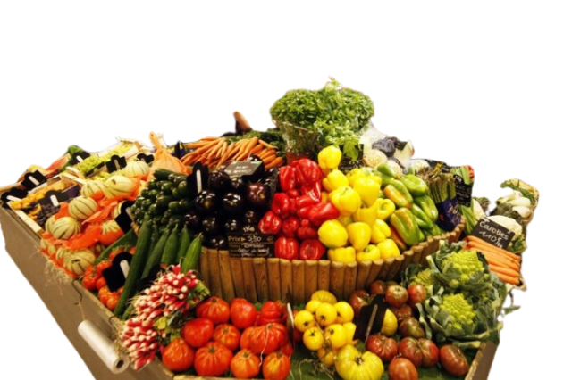
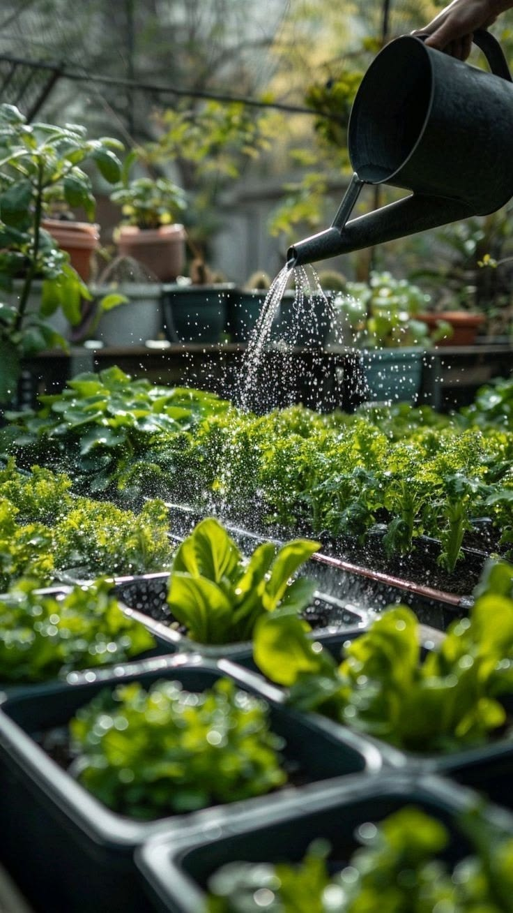

Avis de Makaya André
« Travailler avec une coopérative bien organisée a changé notre façon de vendre. Nous contrôlons mieux nos commandes, nous suivons régulièrement nos chiffres et nous ne nous trompons plus sur les volumes. »
COMAKI
Transformez votre activité en un partenariat de confiance avec la COMAKI et offrez-vous un accès plus simple à des marchés plus offrants.



La COMAKI centralise la production de ses membres et facilite la mise en relation avec des acheteurs fiables. Vous vous approvisionnez, vous êtes livré, vous revendez.
Une offre agricole pensée pour les acheteurs et revendeurs : volumes, régularité, qualité.
Accès simple aux produits disponibles pour approvisionner vos marchés sans perdre de temps.
Une coopérative organisée, pour des livraisons suivies et des revenus plus stables de chaque côté.
Confiance, gain de temps, meilleure organisation, stocks et commandes maîtrisés, visibilité élargie.
Présentation du projet
La COMAKI est une coopérative agricole basée à Brazzaville / Kintélé. Sa mission : produire et commercialiser des denrées agricoles, gérer clairement ses stocks et ses livraisons, et offrir aux acheteurs un partenaire de confiance pour s’approvisionner et revendre sur leurs marchés.
En commandant à la COMAKI, vous bénéficiez d’une gestion des productions, de produits agricoles publiés et disponibles, d’un suivi des ventes et des commandes, et d’une communication directe avec l’équipe — notamment sur WhatsApp.

Suivi des activités des membres pour une offre claire et régulière.

Maïs, arachides, manioc — avec les quantités disponibles pour vos commandes.

Chaque commande est suivie jusqu’à la livraison, pour éviter les mauvaises surprises.
Informations, disponibilités et confirmation de commande, simplement.
Vous êtes informé des disponibilités, commandes et livraisons en cours.

Un fournisseur local crédible pour développer votre activité de revente.
Avantages
En pratique

Dites-nous quels produits et quelles quantités vous souhaitez.
Disponibilité, prix et livraison sont validés avec vous.
Vous êtes livré, puis vous vendez sur votre marché individuel.
Témoignages
Acheteurs et revendeurs partagent leur expérience avec nos produits et nos livraisons.
Contactez la COMAKI sur WhatsApp pour commander du maïs, du manioc ou des arachides et approvisionner votre marché.